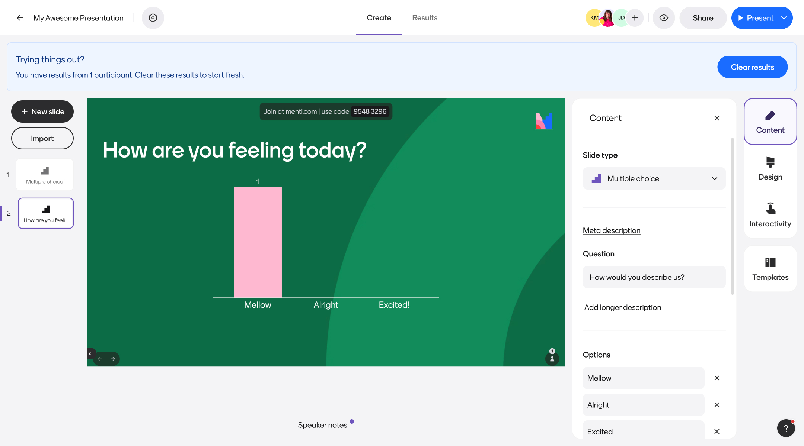
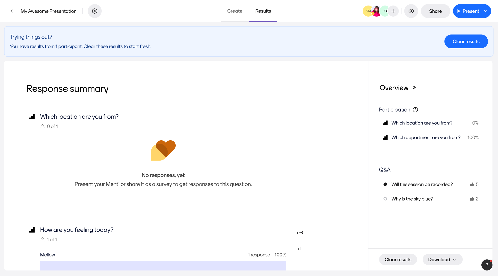
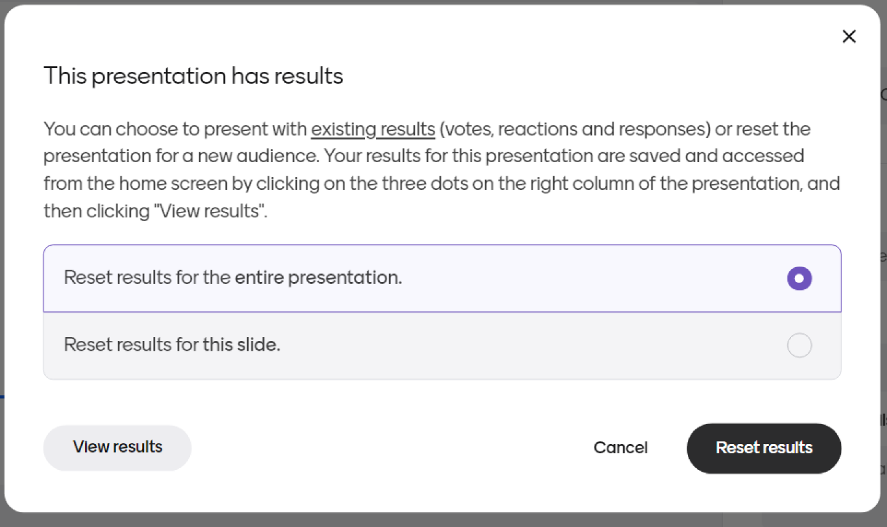
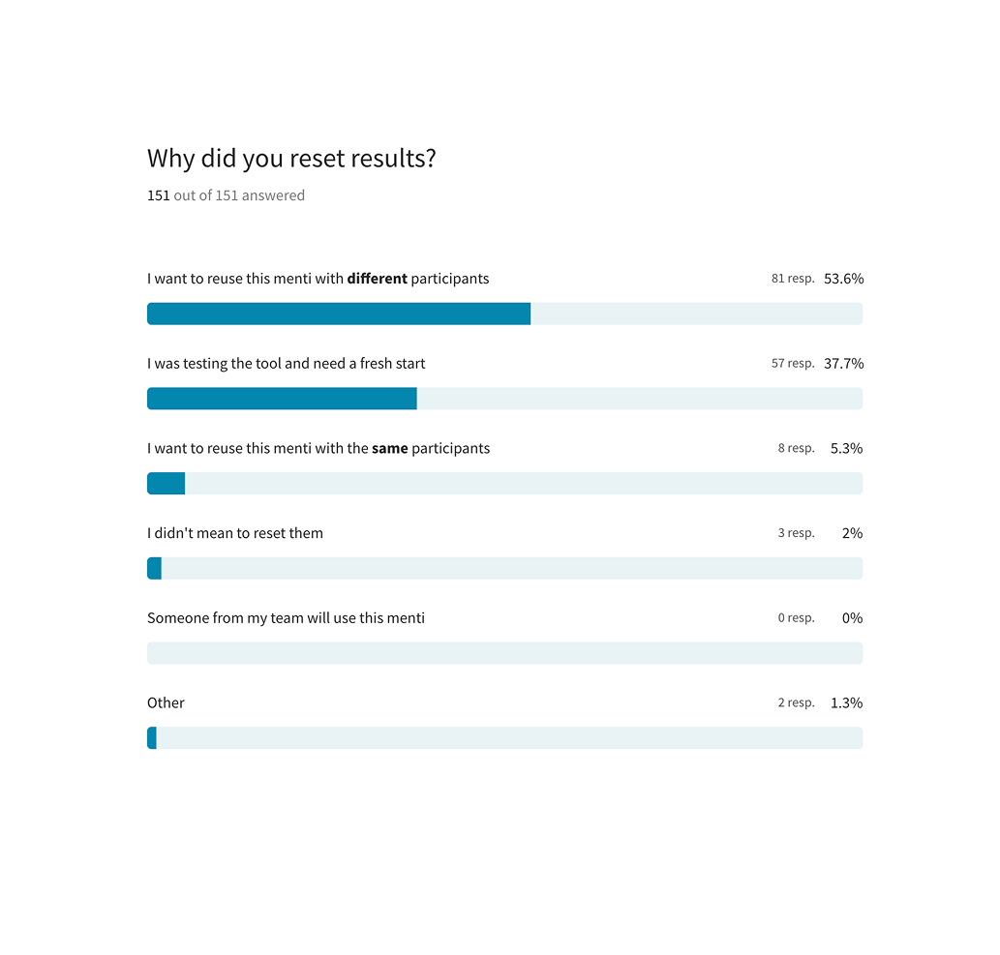
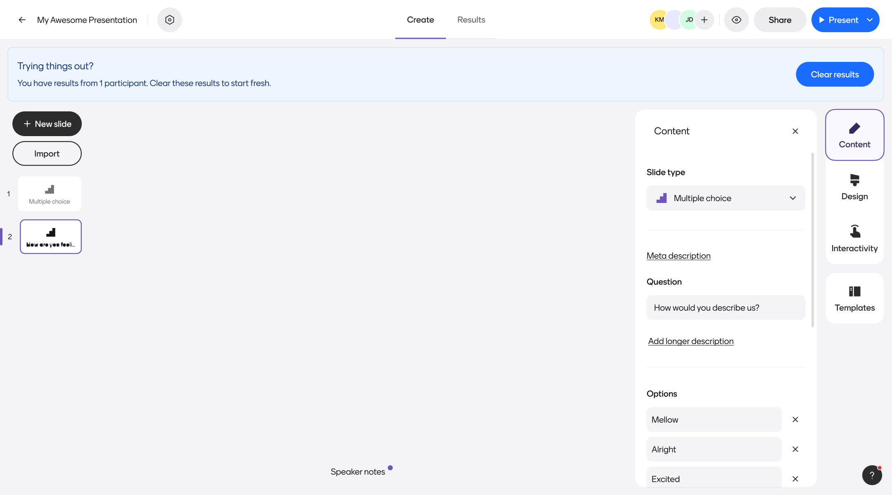
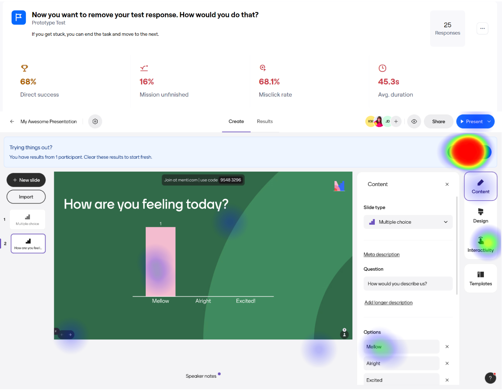
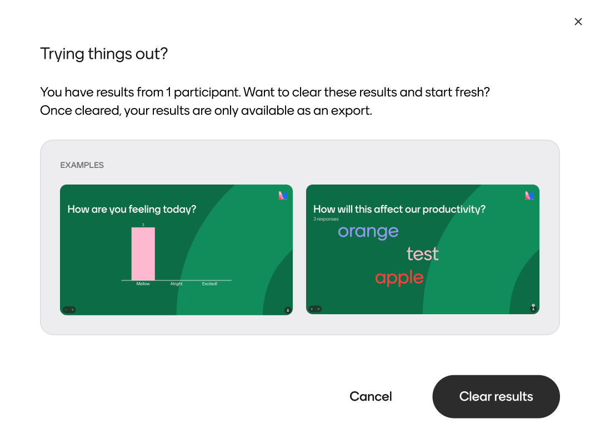
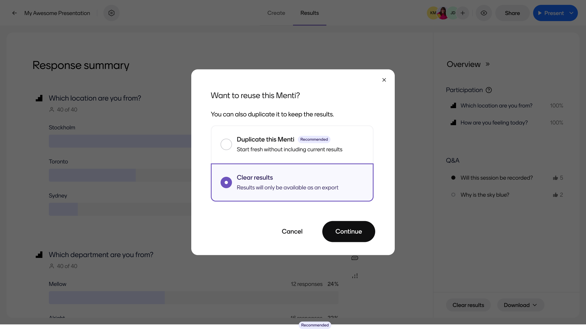

Data management
Background
Mentimeter is primarily used to create engaging presentations and surveys. Essentially, we help people ask questions, create conversations, and get answers. And, after users share a presentation or survey, we offer several ways for them to dig into their data and build upon their insights.

Challenge
When I first joined Mentimeter, we’d automatically add a banner to the top of the page whenever a user viewed a file with result data. This banner simply suggested that users should “Manage their results”. However, if a user engaged with this flow, they’d mistakenly be encouraged to permanently delete data in their account without proper warning.
This was a pretty scary and negative experience for our users. To make matters worse, we didn’t have a good system in place to recover any data lost via this method, which led to countless pain for our Support team. We also felt that such a permanent message (“You have results”) wasn’t worth the real estate of a permanent banner, and we wanted to explore ways to contextually deliver the right message at the right time.
Our approach
To ensure we were building something that benefitted both our users and our internal teams, our team did the following:
- Completed an audit of the existing flow against heuristic design principles
- Met with Support to learn more about the types of issues users were experience with this flow
- Built an automated survey in platform to quickly learn why people used this feature immediately after selecting it
- Mapped out user flows based on both expected behaviors and jobs to be done assessed in qualitative research
- Ideated on unique ways to surface result management opportunities in more contextual ways
- Ran A/B tests with clickable prototypes to validate designs for each of our previously identified user flows
- Collaborated with Support and other impacted teams as key stakeholders throughout the process

Outcomes
Tickets related to lost data within the platform have decreased dramatically, and users have still been able to engage with our contextual messages without any additional friction. We’re still tracking overall success metrics for these changes, but as of now our Support and Product teams are quite excited about the outcomes.
Project samples & additional details





